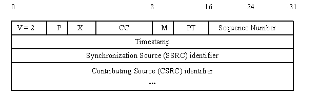
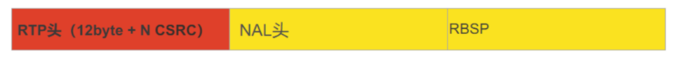

rtp协议相关
实时传输协议（Real-time Transport Protocol或简写RTP）是一个网络传输协议，它是由IETF的多媒体传输工作小组1996年在RFC 1889中公布的。
RTP头部协议格式图

版本号（V）：2比特，用来标志使用的RTP版本。
填充位（P）：1比特，如果该位置位，则该RTP包的尾部就包含附加的填充字节。
扩展位（X）：1比特，如果该位置位的话，RTP固定头部后面就跟有一个扩展头部。
CSRC计数器（CC）：4比特，含有固定头部后面跟着的CSRC的数目。
标记位（M）：1比特,该位的解释由配置文档（Profile）来承担.
载荷类型（PT）：7比特，标识了RTP载荷的类型。
序列号（SN）：16比特，发送方在每发送完一个RTP包后就将该域的值增加1，接收方可以由该域检测包的丢失及恢复包序列。序列号的初始值是随机的。
时间戳：32比特，记录了该包中数据的第一个字节的采样时刻。在一次会话开始时，时间戳初始化成一个初始值。即使在没有信号发送时，时间戳的数值也要随时间而不断地增加（时间在流逝嘛）。时间戳是去除抖动和实现同步不可缺少的。
同步源标识符(SSRC)：32比特，同步源就是指RTP包流的来源。在同一个RTP会话中不能有两个相同的SSRC值。该标识符是随机选取的 RFC1889推荐了MD5随机算法。
贡献源列表（CSRC List）：0～15项，每项32比特，用来标志对一个RTP混合器产生的新包有贡献的所有RTP包的源。由混合器将这些有贡献的SSRC标识符插入表中。SSRC标识符都被列出来，以便接收端能正确指出交谈双方的身份。
RTP载荷H264码流：红色RTP协议头，黄色H264码流。

NAL全称Network Abstract Layer，即网络抽象层。在H.264/AVC视频编码标准中，整个系统框架被分为了两个层面：视频编码层面（VCL）和网络抽象层面（NAL）。其中，前者负责有效表示视频数据的内容，而后者则负责格式化数据并提供头信息，以保证数据适合各种信道和存储介质上的传输。NAL单元是NAL的基本语法结构，它包含一个字节的头信息和一系列来自VCL的称为原始字节序列载荷（RBSP）的字节流。
如果NALU对应的Slice为一帧的开始，则用4字节表示，即0x00000001；否则用3字节表示，0x000001。
每帧数据就是一个NAL单元（SPS与PPS除外）。在实际的H264数据帧中，往往帧前面带有00 00 00 01 或 00 00 01分隔符，一般来说编码器编出的首帧数据为PPS与SPS，接着为I帧……
NAL以NALU（NAL unit）为单元来支持编码数据在基于分组交换技术网络中传输。
NALU：定义了可用于基于分组和基于比特流系统的基本格式。
RTP封装：只针对基于NAL单元的本地NAL接口。